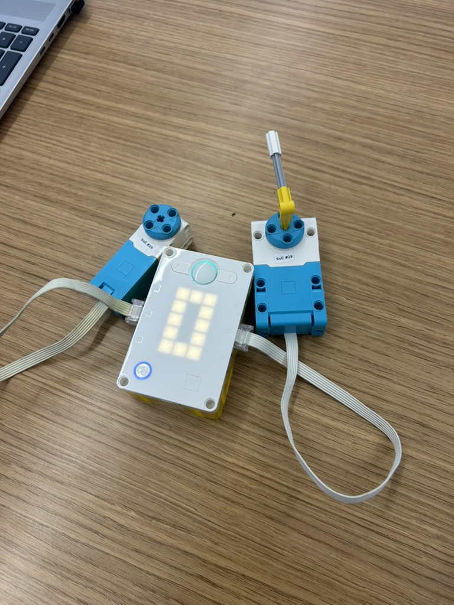

We used one motor as a control input for another motor. As the control motor rotated from 0 to 180 degrees, it changed the other motor's speed: at 0 degrees it ran at full force backward, at 90 degrees it stopped, and at 180 degrees it ran at full force forward. Positions between those points set the speed relative to how far the control motor had rotated.